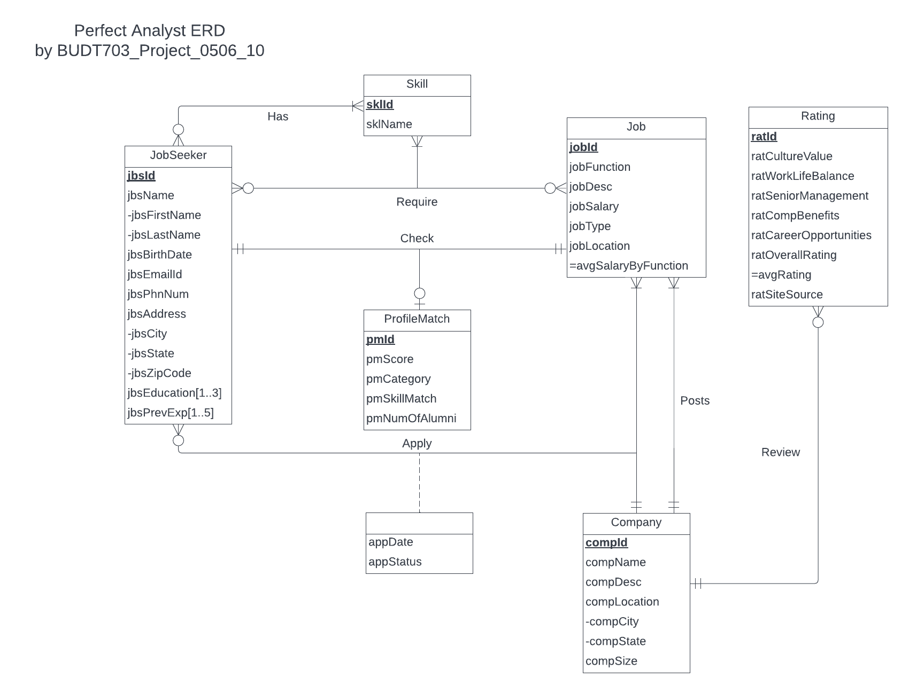
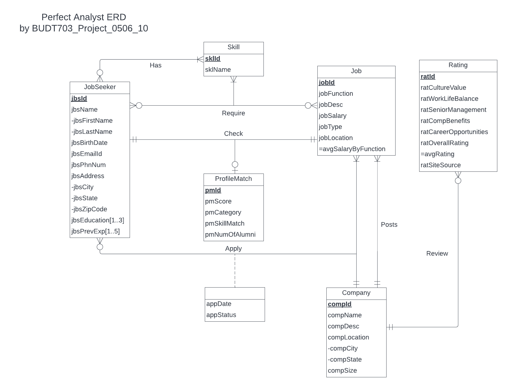
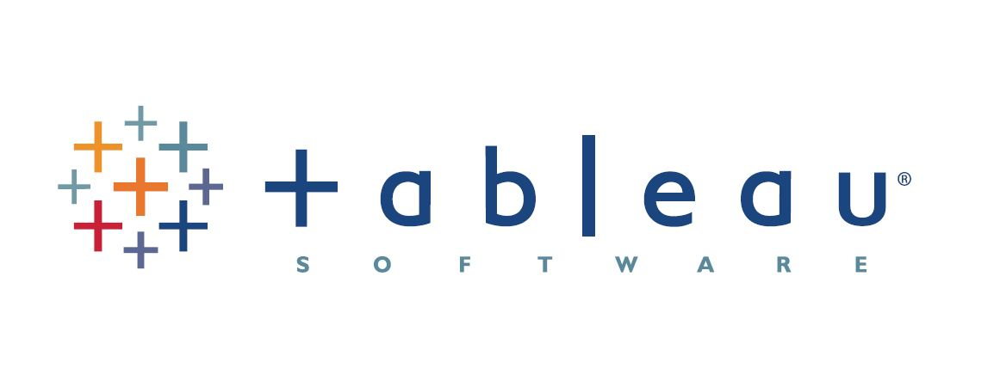

In this project, R was employed for analyzing historical data concerning crop yields and weather patterns.
The objective was to employ machine learning models like XGBoost and Regression Tree to forecast future yields.
Our primary focus was on predicting crop yields for the ten most commonly consumed crops globally.By doing so,
our predictions can be more widely applicable since these crops are produced in large quantities to meet the global demand.
 

The project's core mission is to cater to the specific needs of Masters's students seeking full-time Data Oriented / Analyst roles in the United States through Indeed.com. The primary objectives involve constructing an efficient ER diagram and Relational Schema to capture all relevant nuances, and formulating precise SQL queries to extract and present data as per the client's requirements.
This project aims to bridge the gap between job seekers and employers in the data-oriented field, enhancing the job search process.

The primary objective of this project is to address the prevalent issue encountered by financial institutions, namely loan payment defaults.Our team has successfully created three robust machine learning models that function as dependable reference tools for predicting the likelihood of loan payment default by individuals.
The implementation of these models will aid financial organizations in making informed decisions regarding loan approvals, enabling them to minimize risk while maximizing profitability.

Unlocking Insights with Data Visualization: Explore my Tableau Public Profile!

Empowering Analytics with Power BI: Explore My Portfolio

This project focuses on leveraging NLP techniques to preprocess text data, particularly tweets, by removing stopwords, performing lemmatization, and eliminating unwanted characters. The preprocessed data is then used to train a deep learning model combining Long Short-Term Memory (LSTM) and Convolutional Neural Networks (CNN) architectures for improved text sentiment analysis and classification. By using these methods, we can mine valuable insights from vast textual data available today.

In this project, my team chose an article from the INFORMS Journal on Applied Analytics. Our primary goal was to craft a concise and informative presentation, summarizing the article's crucial findings and insights. To further demonstrate the article's practical contributions, we integrated a hands-on "teaching example" using Excel Solver, showcasing its real-world applications.This project allowed me to highlight my analytical skills and proficiency in applying research to practical scenarios.